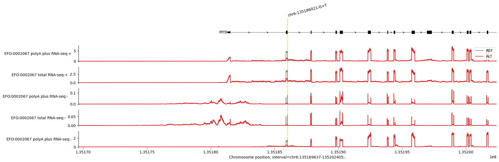
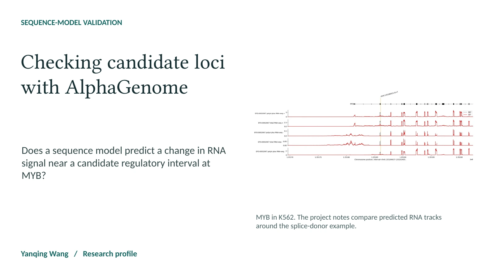

Sequence-model validation
Checking candidate loci with AlphaGenome
Does a sequence model predict a change in RNA signal near a candidate regulatory interval at MYB?
AlphaGenome Atlas · MYB in K562
Approach
I reviewed AlphaGenome Atlas tracks across candidate intervals at MYB and examined a reported splice-donor variant as a comparison case in K562.
In silico case study
The splice-donor example showed a change in predicted RNA signal. It provides a reference for interpreting the tracks. A predicted change alone cannot establish which enhancer regulates MYB.
Proposed follow-up
A follow-up would align the genome build, allele, biosample and RNA track for each candidate, then compare the predicted direction with independent perturbation data where available.


Project presentation

![Slide 2. I reviewed AlphaGenome Atlas tracks across candidate intervals at MYB and examined a reported splice-donor variant as a comparison case in K562. The splice-donor example showed a change in predicted RNA signal. It provides a reference for interpreting the tracks. A predicted change alone cannot establish which enhancer regulates MYB. A follow-up would align the genome build, allele, biosample and RNA track for each candidate, then compare the predicted direction with independent perturbation data where available.](../assets/slides/alphagenome-2.webp)
Read the PDF on this page
Method reference · AlphaGenome model overview